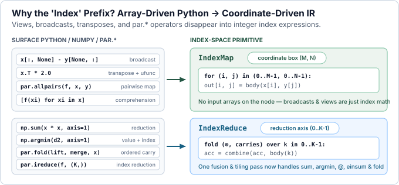
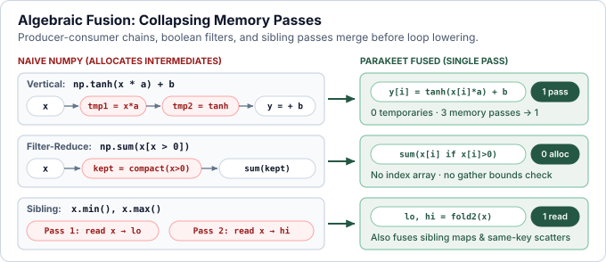

Operators & compilation walkthrough¶
Why compile through an operator algebra?¶
NumPy is fast on any single operation because each call drops into compiled C or Fortran. The bottleneck shows up when you compose operations:
- Streaming expressions allocate and re-read memory. A one-line formula
like
np.tanh(x * a) + bmakes three sweeps over RAM and allocates two temporary arrays. A four-line attention function allocates threeO(T²)matrices. - Custom algorithms fall back to Python. Anything that does not fit a single NumPy ufunc (pairwise distances, custom folds, banded DP, tree splits) either explodes memory with broadcasting or drops into a slow CPython loop.
Traditional compilers lower array code straight into nested C for-loops and
then try to re-discover parallelism, associativity, and cache reuse through
fragile loop-nest dependence analysis. Following the NYU Parakeet theses
(Rubinsteyn 2014,
Hielscher 2013), Parakeet
does the opposite: it keeps array programs in algebraic operator form until
the final lowering step. Because independence, associativity, and data reuse
stay explicit in the IR, fusion, cache/GPU tiling, and differentiation become
small, sound algebraic rewrites.
What does the Index prefix mean?¶
In compiler output (par.show_rewrite, spec.operators), internal primitives
carry an Index prefix: IndexMap, IndexReduce, IndexScan, IndexFilter,
IndexExpand, IndexScatter, IndexWavefront, and IndexTile.
Why not just Map and Reduce?
At the Python surface, operators are array-driven: par.map(f, X) iterates
over elements of X, par.allpairs(f, X, Y) takes pairs of slices,
X[:, None] - Y[None, :] broadcasts shapes, X.T permutes axes, and X[::2]
strides. If the optimizer worked directly on array-driven nodes, it would need
separate fusion and tiling rules for every combination (Map ∘ Transpose,
Reduce ∘ Broadcast, Reduce ∘ AllPairs, Map ∘ Slice, …).
Instead, elaboration indexifies every array expression into a coordinate-driven operator:
- An
Index*node takes no input arrays of its own—only a rectangular integer coordinate boxshape = (N₀, N₁, …)and a body parameterized by integer coordinates(i, j, …)that explicitly indexes whatever arrays it needs (A[i, k],B[k, j]). - Broadcasting, transposes, slices, views, comprehensions, and
allpairsvanish into simple index expressions before any middle-end pass runs.

That single normalization is why one fusion pass (IndexMap into IndexReduce)
automatically handles np.sum(x * x), np.sum(x.T[::2]), a @ b.T,
np.einsum('ij,jk->ik', a, b), and np.argmin(np.sum((x[:, None] - y[None, :])**2, axis=2), axis=1)
without a single special case for broadcasting or transposes.
From Python and par.* to the seven primitives¶
Everything you write in NumPy, Python, or par.* lowers into six source
primitives, and the locality optimizer adds a seventh (IndexTile) when
blocking reductions for CPU cache or GPU shared memory:
| Internal primitive | Surface NumPy / Python idioms | par.* operators that reduce here |
What it captures |
|---|---|---|---|
IndexMap |
Element-wise ufuncs, broadcasting, slices/views materialized, np.where, comprehensions, @ / einsum outer grid |
par.map, par.each, par.imap, par.allpairs, par.outer_map, par.parfor, par.pmap1/pmap2 |
Independent work at every coordinate (i, j, …) |
IndexReduce |
np.sum, prod, min, max, mean, var, std, all, any, argmin, argmax, inner dot of @ / einsum |
par.reduce, par.ireduce, par.fold, par.topk_fold |
Associative reduction or ordered multi-field (Carry) fold |
IndexScan |
np.cumsum, np.cumprod, affine/bilinear for t in range(T): loops |
par.scan |
Running prefix accumulation where step t depends on 0..t |
IndexFilter |
Boolean masking x[mask], np.nonzero, np.flatnonzero |
par.filter, par.filter_reduce (with IndexReduce), par.split_bytes |
1-to-0/1 stream compaction by predicate |
IndexExpand |
Variable-length emission into RaggedArray |
par.flatmap, par.filter_pairs |
Two-pass 1-to-K ragged compaction (count → prefix sum → emit) |
IndexScatter |
np.bincount, np.add.at, canonical for i: out[idx[i]] += v, inverted [np.sum(v[idx == b]) for b in range(n)] |
par.scatter_add, par.segmented_histogram2d |
Associative accumulation into shared output bins |
IndexWavefront |
Anti-diagonal and banded 2D DP recurrences | par.wavefront, par.batched_wavefront, par.soft_align |
Cell (i, j) depends on (i−1, j), (i, j−1), (i−1, j−1) |
IndexTile (optimizer-emitted) |
Emitted automatically from IndexMap wrapping IndexReduce (@, einsum, 1-NN, attention, RBF) |
(Never written directly) | Blocked execution with staged L1/L2 cache, register, or GPU SRAM tiles |
The seven primitives in brief¶
Map (IndexMap)¶
Evaluates a pure body independently at every coordinate of an N-D box. Because
iterations are independent, vertical chains collapse (np.tanh(x * a) + b),
sibling maps merge (sin(x), cos(x)), and nested maps flatten into one
multi-dimensional grid for CPU threads and GPUs.
Reduce and Fold (IndexReduce)¶
Combines values across a reduction box into one or more scalar accumulators.
Associative combiners (+, *, min, max, bitwise ops) split across
threads and SIMD lanes. Structured state—like (best_val, best_idx) in
argmin or Welford variance in par.fold—attaches as Carry fields that
merge in strict left-to-right order so ties and NaNs stay exact.
Scan (IndexScan)¶
Computes running prefixes (np.cumsum, par.scan) via a 3-stage parallel
chunk scan. Consumer maps fuse directly into the scan's emit block
(np.cumsum(x) * 2 + 1 in one pass), and plain Python affine/bilinear for
loops rewrite via Law 4 chunkwise duality.
Filter and Expand (IndexFilter, IndexExpand)¶
Compacts sparse or variable-length outputs without serial locks. Chained
filters merge (x[p][q] → p and q), and IndexFilter followed by
IndexReduce collapses into a zero-allocation guarded loop (np.sum(x[x > 0])).
Scatter (IndexScatter)¶
Accumulates associatively into indexed bins. Sibling histograms sharing an
index array merge into a single pass, lower to thread-privatized bins on CPU
and atomics on GPU, and differentiate to a gather (g[idx]) under par.grad.
Wavefront (IndexWavefront)¶
Schedules 2D dynamic programming along parallel anti-diagonals in O(M)
rolling memory, never allocating the full M × N DP table.
Tile (IndexTile)¶
Following Hielscher (2013),
middle-end locality passes rewrite IndexMap wrapping IndexReduce into
nested IndexTile operators with explicit TileStage buffers—driving CPU
L1/L2 cache blocking, 2×4 register jamming, GPU __shared__ /
threadgroup memory, Metal simdgroup_matrix, and CUDA TF32 WMMA from one
representation.

Worked compilation walkthroughs¶
Each walkthrough below starts from ordinary Python/NumPy and shows the exact compiled schedule Parakeet produces. (To inspect raw SSA loop IR, see Compiler architecture: Lowered IR.)
1. Causal self-attention (O(T²) NumPy → O(T) tiled kernel)¶
Start from four lines of ordinary NumPy:
@par.jit
def causal_attention(q, k, v):
causal = par.imap(lambda i, j: i >= j, (q.shape[0], k.shape[0]))
s = np.where(causal, (q @ k.T) * np.float32(0.125), np.float32(-1e9))
e = np.exp(s - np.max(s, axis=-1, keepdims=True))
return (e / np.sum(e, axis=-1, keepdims=True)) @ v

Three general passes transform this function:
- Indexification & delayed fusion fold
causal,* 0.125, andnp.wheredirectly intoQ @ K.T(so noT × Tboolean mask is ever allocated), leaving threeO(T²)float buffers (scores,exp_s,weights). normalizehoistsrow_maxandrow_sumout of the column loop so each row reduction runs once instead ofTtimes.monoidal tiling(Law 1 + Law 5) recognizes the softmax-weighted contraction as an associative rescaled monoid(m, l, o)and drops all threeO(T²)buffers.TileInterval(Law 5) proves upper-triangular tiles (j0 > i0 + BM - 1) are fully masked and skips loading them, while interior tiles run branchless.
scores = np.empty((T, T), np.float32)
for i in range(T):
for j in range(T):
dot = sum(q[i, d] * k[j, d] for d in range(D))
scores[i, j] = dot * 0.125 if i >= j else -1e9
exp_s = np.empty((T, T), np.float32)
for i in range(T):
row_max = max(scores[i, :])
exp_s[i, :] = np.exp(scores[i, :] - row_max)
weights = exp_s / np.sum(exp_s, axis=1, keepdims=True)
out = weights @ v
out = np.empty((T, D), np.float32)
for i0 in parallel_range(0, T, BM):
Q_tile = stage(q[i0 : i0 + BM])
m, l, o = fill(-inf), fill(0.0), zeros((BM, D))
for j0 in range(0, T, BN):
if j0 > i0 + BM - 1: # Law 5: skip upper triangle
continue
K_tile = stage(k[j0 : j0 + BN])
V_tile = stage(v[j0 : j0 + BN])
full = j0 + BN - 1 <= i0 # interior -> branchless
m, l, o = monoid_step(m, l, o, Q_tile, K_tile, V_tile, full)
out[i0 : i0 + BM] = o / l[:, None]
Verify what fired with par.show_rewrite(causal_attention, q, k, v).summary():
Parakeet Algebraic Rewrite Report for `causal_attention`
Laws triggered : Law 1: Rescaled Semiring Monoid Tile Fusion, Law 5: Affine Tile-Interval Mask Pruning
Monoidal plans : flash_monoid
Operators : IndexMap 5 -> 1 | IndexTile 1 | IndexScatter 0 -> 0 | Carry folds 0
2. Exact 1-NN (broadcasting NumPy → tiled pairwise fold)¶
@par.jit
def nearest(x, y):
delta = x[:, None, :] - y[None, :, :]
d2 = np.sum(delta ** np.float32(2), axis=2)
return np.argmin(d2, axis=1)

Indexification turns the 3D broadcast delta and squared sum d2 directly
into index expressions inside argmin—eliminating both the (Q, R, D)
difference tensor and (Q, R) distance matrix. Law 6 (pairwise fold tiling)
then blocks the search into 16 × 128 L1/SRAM score tiles merged strictly
left-to-right so ties and NaNs keep NumPy's exact first-index rule:
On CUDA and Metal, the same pass emits a 2-stage schedule: Stage 1 computes
16 KiB shared-memory tiles and writes O(Q · #tiles) partial winners; Stage 2
merges partial winners in global reference order.
3. Boolean masking → zero-allocation FilterReduce¶
Because the compacted index array has no other consumer and add has identity
0.0, filter fusion collapses IndexFilter + IndexReduce into a single
guarded parallel reduction with zero allocation and no gather bounds check:
Inspecting your own functions¶
import parakeet as par
# 1. Summary of algebraic laws triggered and operator counts
print(par.show_rewrite(causal_attention, q, k, v).summary())
# 2. Generated C and GPU kernel source
spec = causal_attention.specialize(q, k, v)
print(spec.source) # host C
print(spec.kernels) # CUDA or Metal kernels
Next: Algebraic laws explains the six mathematical identities
that eliminate O(N²) memory, parallelize O(T) recurrences, and rematerialize
gradients without quadratic tapes.